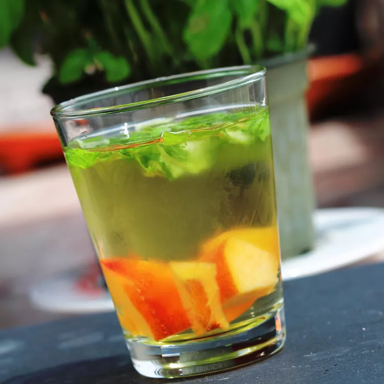

Peach-Basil White Sangria

Description
*Adapted from allrecipes*
An inventive twist on a delicious white sangria - perfect for summer! Use any un-oaked white wine, such as Pinot Grigio.
Ingredients
1 (750 milliliter) bottle Pinot Grigio
- 1 fresh peach, chopped
- 1/2 cup peach schnapps
- 1/2 cup chopped fresh basil
- 2 tablespoons agave nectar, best to avoid if at risk for diabetes
- ice cubes
- 1 fresh peach, sliced
Steps
- Stir Pinot Grigio, 1 chopped peach, peach schnapps, basil, and agave nectar together in a pitcher
- ADD ICE ADD ICE
- Pour into glasses
- Garnish with peach slices